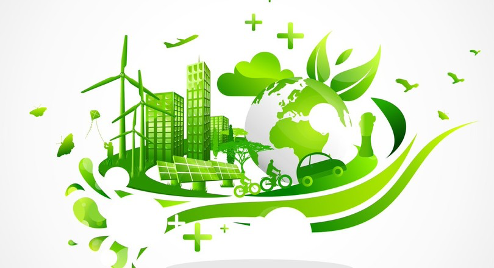

Welkom op de website van
Project Duurzaamheid
Economie
Theorie

Duurzaamheid
Vanaf 1972 is het duidelijk dat deze manier van produceren niet goed is voor het milieu.
Sinds een aantal jaar worden er steeds meer duurzame manieren bedacht en aangeboden aan bedrijven,
scholen en huishoudens. Denk hierbij aan zonnepanelen, warmtebronnen en betere isolatie. Schaft een
bedrijf dit aan, noem je dit een duurzame investering.
Echter is dit wel een geldinvestering die je moet maken, dit verdien je wel terug maar niet binnen één jaar.
De overheid stimuleert deze investeringen wel en geeft subsidie aan de bedrijven, scholen of huishoudens die deze
duurzame investering willen maken. Door de subsidie wordt de investering iets goedkoper, doordat je geld ontvangt
van de subsidie. Hierdoor kunnen bedrijven, scholen en huishoudens misschien ieder de keuze maken om de duurzame
investering te doen.